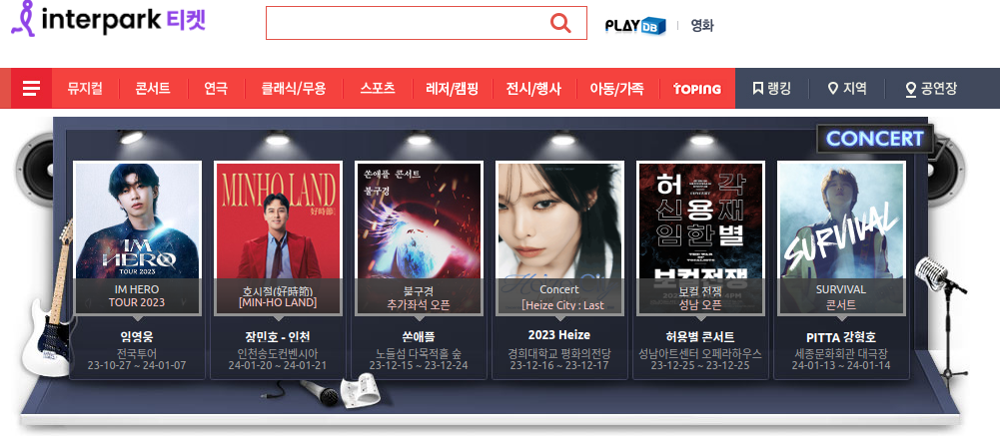
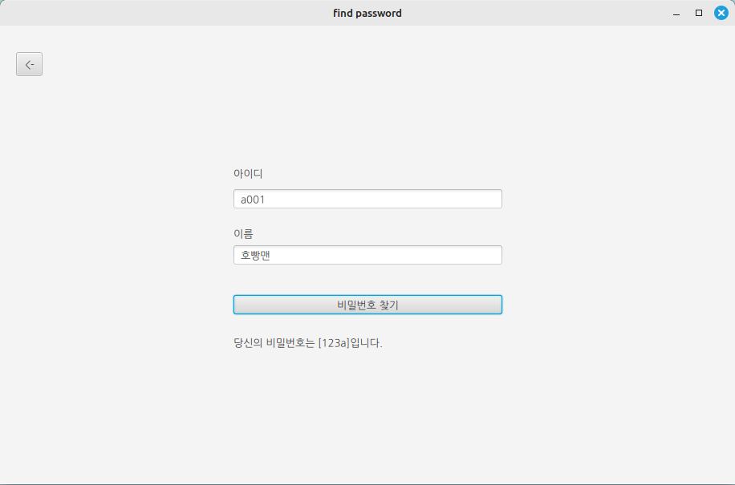
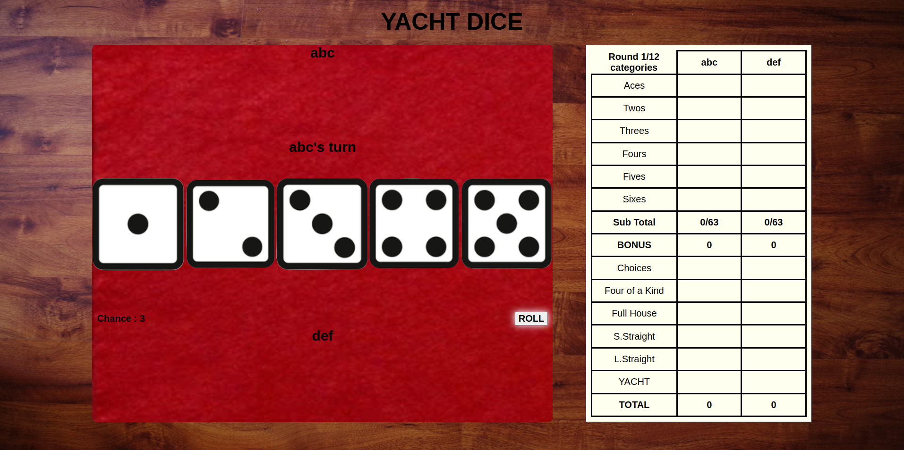
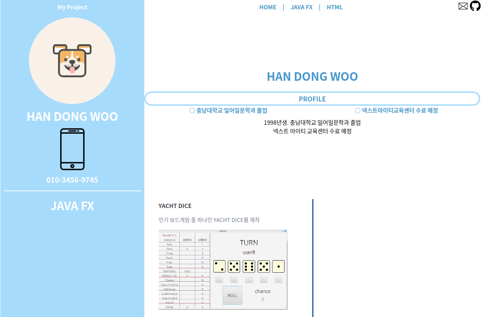
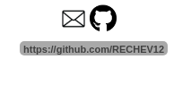
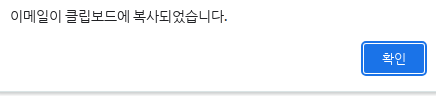

JAVA FX
-
YACHT DICE
인기 보드게임 중 하나인 YACHT DICE

-
점수 미리 표시
본인이 추가할 수 있는 점수를 파란 글자로 보여준다
이미 확정지은 점수는 검은색으로 표시
-
주사위 잠금
돌리고 싶지 않은 주사위를 잠금으로써 원하는 조건의 점수를 노릴 수 있다.
-
결과 표시
총 12라운드가 진행되고, 종료 시, 점수만을 모은 결과창 표시
-
현재 진행중인 공연 모아보기
각 예매처를 따로 방문하여 찾지 않고 한 번에 찾아볼 수 있는 프로그램 구축
 -
DB에 자료를 담아 데이터 가져오기
데이터가 너무 많으며, 제공되는 자료에 장소, 가격, 이미지URL 등 없는 정보가 너무 많아
부득이하게 데이터를 따로 추가하여 테스트 진행
-
로그인/회원가입/비밀번호 찾기 기능 추가
DB에 담겨있는 임시 회원 테이블과 연동하여 기능 구현
미 로그인 시, 검색 불가
 -
조건 검색 가능
날짜의 밀리초를 계산하여 날짜 검색
그 외의 가격, 지역, 공연 종류 등 조건을 설정할 수 있다.
-
이미지 클릭 시, 링크 이동
문화 공공데이터 광장에서 제공하는 해당 공연 사이트로 이동
-
RPG
게임 장르 RPG를 제작
-
레벨, 능력치 증가 요소
레벨이 오름에 따라 필요한 경험치량이 달라지고 스탯이 증가하여 RPG의 성장의 요소 구현
-
몬스터 출현 설정
각 필드마다 레벨 제한을 걸고, 유저의 레벨에 따라 몬스터의 출현 레벨이 달라진다.
-
주사위를 이용한 선공 싸움
랜덤 요소인 주사위를 도입해 선공 싸움에 변수를 추가

-
애니메이션 추가
Java Fx의 TimeLine을 이용하여 배틀 로그와 체력과 경험치 바가 늘고나고 줄어드는 효과 추가
-
결과 창
경험치 증가와 확률적으로 획득 가능한 아이템, 몬스터의 강함에 따른 돈 획득
-
스킬
특정 레벨마다 습득 가능한 기술을 일람
HTML
-
YACHT DICE
인기 보드게임 중 하나인 YACHT DICE를 WEB으로 구현
 -
플레이어 이름 설정
이름을 작성하면 그 이름이 화면에 표시
-
각 점수의 조건 표시
각 점수가 어떠한 조건일 때 충족되는 점수인지 hover로 표시
-
주사위 잠금 기능
주사위를 클릭하면 본인의 이름이 써있는 쪽으로 주사위가 이동하면서 잠김
-
점수 미리보기
각 조건에 따른 점수를 미리 볼 수 있다.
연한 회색으로 보여주며, 점수 확정 시 검은 색으로 전환
-
결과 표시
결과를 표시
-
자기소개 페이지
여태까지 만들었던 프로젝트 표시
 -
HOME 탭, LIST 탭
같은 페이지
간단한 자기소개와 개인 프로젝트 나열
LIST에서 그림 클릭 시, DESCRIPTION 탭으로 넘어간다.
-
DESCRIPTION 탭
각 프로젝트에 대한 설명
-
목차 플로팅
클릭 시, 해당 위치로 스크롤 이동

-
상단
이메일 아이콘을 클릭 시, 클립보드에 이메일 복사
GitGub 아이콘을 클릭 시, GitGub 개인 페이지로 이동
 